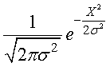
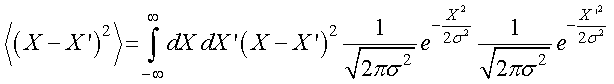
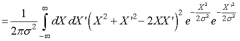
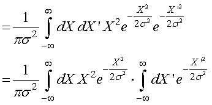
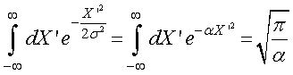

まずは，正規分布のノイズのみの場合のMSDプロットがどうなるかを考えましょう．
この場合は，その分布は中心の周りに分布し，その値は時間には依存しませんので，dt，に関係なく一定の値になると思われます．
つまり，
正規分布の任意の二点をピックアップし，その差分の二乗平均を求める
ことを行えばいいのです．
さて，正規分は，

で表すことができます．
今，同一の正規分布の二点間の距離の二乗平均を求める場合には，

を計算すればよいこととなります．これは，

のように書き換えることができます．ここで，括弧内の第三項は奇関数なので積分すると，０，となります．
また，括弧内の第一，第二項は同じなので，どちらかを計算して2倍すればよく，さらに積分を二つに分けることができるので，

とすることができます．
ここで，簡単のため，

とおけば，

と二つ目の積分は簡単に解くことができます．
問題は一つ目の積分です．
それは次のページで説明します．